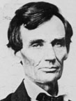
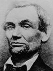
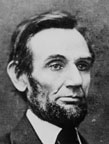
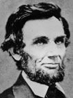
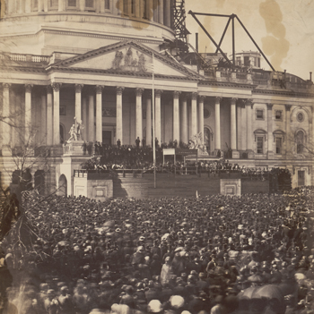

|
Formidable problems immediately faced President-elect
Lincoln. At news of his election, disunion erupted in the
South. On November 10, four days after the election, South
Carolina authorized the election of a state convention to
consider secession. Georgia followed suit shortly
thereafter. The President, James Buchanan, felt that the
states' actions were unconstitutional, but also that he was
constitutionally unable to interfere. All eyes thus turned
to Springfield, where an inexperienced leader with a limited
personal acquaintance among members of his own party groped
his way to formulate a policy for his new administration.
|

|

|
|

|

|
The progress of Abraham Lincoln's beard.
|
Lincoln was given the use of the governor's office in the
state capitol in Springfield and he spent a great deal of
time answering correspondence and receiving visitors. He
also began growing a beard, partly due to the advice of his
campaign managers and perhaps partly because of a letter
from an eleven-year old girl in New York named Grace Bedell.
She told Lincoln to grow a beard, writing that "You would
look a great deal better for your face is so thin. All the
ladies like whiskers and they would tease their husbands to
vote for you and then you should be President." Amused,
Lincoln replied, "As to the whiskers, never having worn any,
do you not think people would call it a silly piece of
affection if I were to begin it now?"
In the three months after his election, Lincoln issued no
public statements and made no formal addresses. In part,
this was due to the weakness of his position. Though the
Republicans had carried the election, no votes had been cast
for Lincoln personally. The presidential electors chosen
would not meet until December 5, and their ballots would not
be counted until February 13. Lincoln realized that under
the circumstances the correct operation of the electoral
process was far from assured, and until it did go forth, he
had no legal standing as a public official.
Besides these technical considerations, Lincoln was also
following the advice of his party. The President had already
stated his official position, and to reiterate his views
might have indicated that he was frightened by Southern
bluster, and would have caused demoralization in the North.
Finally, and perhaps most significantly, Lincoln remained
silent because he felt that Unionists were a large minority
in the South and that, given time, they would prevail over
their more hotheaded neighbors.
Selecting the Cabinet
So, instead of concerning himself with the events
transpiring in the South, Lincoln focused on organizing his
administration. The most significant part of that task, in
turn, was selecting a cabinet. This was a delicate job.
Lincoln had been nominated and elected because he was a
compromise acceptable to all factions in his party, not
because he had a proven record of leadership. If he was to
have a successful presidency, he needed to gain the support
of his main rivals and to address the concerns of each of
the interest groups that comprised the Republican party.
Lincoln worked closely with Vice-President Hannibal
Hamlin, an experienced politician. The two men agreed that
the post of Secretary of State would be offered to William
Seward, in recognition of his importance to the party. It
was not certain that Seward would accept, he was an
influential Senator and potentially unwilling to serve as
Lincoln's subordinate. Lincoln made the situation worse by
proceeding too slowly, giving the impression that he did not
really want Seward in his Cabinet. Eventually, after some
delicate politicking by Lincoln and his allies, Seward was
cajoled into accepting the post.
While Seward was deliberating, Lincoln met with Edward
Bates of Missouri. Mindful of Bates' ego, Lincoln lied and
told him that he was "the only man that he desired in the
Cabinet, to who he [had] yet spoken [or] written a word,
about their own appointments." Lincoln explained to Bates
that it was politically necessary to offer Seward the State
Department, but led Bates to believe that Seward would turn
the post down and that the appointment would then be his.
Until that time, Lincoln said, he could only offer the post
of Attorney General. Bates was satisfied and accepted the
appointment.

This image shows the cabinet meeting in July of 1862 where Lincoln
first read the Emancipation Proclamation. Left to right are Edwin M. Stanton, Salmon P.
Chase, Lincoln, Gideon Welles, Caleb Smith, William Seward (seated), Montgomery Blair, and
Edward Bates. The only original cabinet member missing from the picture is Simon Cameron,
who was compelled to resign in 1862 amid allegations of corruption in his department.
|
Meanwhile, even before Seward had accepted, he and fellow
New York Republican Thurlow Weed had begun to press Lincoln
to include a Southern Unionist in his cabinet. The move was
designed to assure Southerners that Lincoln would have a
truly national administration. Lincoln liked the idea, but
was not sure it was feasible, wondering what Southerner
would accept a position in his cabinet and on what terms.
The first man Lincoln approached was John Gilmer of North
Carolina, a conservative Whig unionist. If he was to take a
position in the cabinet, Gilmer insisted that Lincoln
guarantee federal protection of slavery in the territories.
This would have gone against the most basic principles of
the Republican party, and Gilmer was dismissed. Lincoln then
turned to Montgomery Blair of Maryland, who was not from the
Deep South but did live in a slave state. He also had strong
support from key factions in the Republican party, most
notably former Democrats like himself. Blair was offered the
position of Postmaster General and accepted.
As soon as Seward had accepted, the President-elect
approached Salmon P. Chase, one of Lincoln's main rivals and
a bitter enemy of Seward. Lincoln had never actually met
Chase before inviting him to Springfield. The
President-elect was impressed with Chase, but their first
meeting was somewhat tense, hinting at the later
difficulties the two men would have. Lincoln determined to
offer Chase the position of Secretary of the Treasury, but
he decided to delay making the appointment until he reached
Washington, concerned about Chase's enemies as well as
possible fallout due to Chase's advocacy of free-trade
policies.
At Chicago, Lincoln had promised that his Vice President
could name the cabinet member from New England. It was a
generous gesture, but Lincoln could be pretty sure that
Hamlin's choice would be his own: Gideon Welles, a former
Democrat and an influential newspaper editor. Lincoln and
Hamlin settled on him for Secretary of the Navy because
Welles had served in that department during the 1840s.
Lincoln's remaining selections were far more difficult.
For Secretary of the Interior, he had to choose between
Norman Judd, Caleb Smith and Schuyler Colfax. Judd, an
Illinoisan, had the strong backing of former Democrats in
the party, though he was strongly opposed by former Whigs.
Smith and Colfax were both from Indiana, which had played a
crucial role in Lincoln's nomination and election. Smith had
been more important at the convention, while Colfax had
campaigned hard for Lincoln in the election. Lincoln
eliminated Judd first, deciding that since Illinois was
well-enough represented, it being his own home state. This
narrowed the options to Smith and Colfax and Lincoln chose
Smith, reasoning that Colfax was young and would have future
opportunities but for the much older Smith this was the last
chance.
Far more difficult was filling the final slot in the
cabinet. Originally, Lincoln had not intended to appoint a
Pennsylvanian from his cabinet. Despite the state's size and
electoral significance, the Republican party there was
heavily divided, with one faction led by Senator Simon
Cameron and the other faction led by governor-elect Andrew
Curtin. Lincoln felt that the two factions would not be able
to agree on a representative, and that by appointing someone
from New Jersey he would be able adequately represent
Pennsylvania's high-tariff interests. When Lincoln made his
plans known, however, he infuriated the supporters of
Cameron who felt, correctly, that they had been led by
Lincoln's lieutenants to believe that Cameron would be
granted a cabinet post in exchange for their support at the
Republican convention.
The Cameron partisans immediately undertook a
letter-writing campaign on behalf of their leader. Lincoln
began to rethink his position, and when it became known that
Cameron was being considered for a cabinet position, there
was a chorus of opposition. Some of the opposition came from
free-traders opposed to Cameron's protectionist stance and
some opposition came from those who felt that Cameron would
be Seward's puppet. The majority of the hostility, however,
came from those who felt that Cameron's past record had
shown him to be careless and unscrupulous. Even Vice
President Hamlin protested that adding Cameron to the
cabinet had an "odor about it that will damn us as a party."
Lincoln agonized over the decision for several weeks, but in
the end decided to appoint Cameron. This caused another
flurry of outrage from Cameron's enemies in Pennsylvania. To
bring an end to the bickering, Lincoln let it be known that
Pennsylvania could have Cameron in the cabinet or no
representative at all. The Pennsylvanians chose the former
and ended their bellyaching.
In this disorderly way, Lincoln picked his closest
official advisers. The selection process ensured that the
cabinet would never be harmonious or loyal to the President.
Writing the Inaugural Address
Once Lincoln had decided on the composition of his
cabinet, he turned his focus to his inaugural address. For
reference, he went to his law partner Billy Herndon and
borrowed copies of the Constitution, of Jackson's
proclamation against nullification and of Clay's speech on
behalf of the Compromise of 1850. He had no need to borrow
another source he intended to use, Webster's celebrated
Second reply to Hayne, since he knew it by heart; that
oration extolling the importance of "Liberty and Union" was,
according to Lincoln, "the very best speech that was ever
delivered."
In addition to political responsibilities, the Lincolns
took care of personal business related to their move to
Washington. Mrs. Lincoln went to New York, determined to
purchase a wardrobe suitable for the queen of Washington
society. She ran up thousands of dollars in bills, and hid
them from her husband. For his part, Abraham made visits to
several people, including his stepmother Sarah. The Lincolns
arranged to rent their house to a retired railroad
executive, and took out an insurance policy on the house
valued at $3,000. Shortly before departing, the President
held a reception for 700 friends, and shook hands from 7:00
p.m. until midnight.
Leaving Springfield
On February 11, a cold and rainy day, a crowd of
Springfield residents gathered to see the president off. A
special train had been chartered for the President and his
party. At 7:55, Lincoln climbed the steps of his private car
to bid his neighbors farewell:
My friends - No one, not in my situation, can appreciate
my feeling of sadness at this parting. To this place, and to
the kindness of these people, I owe everything. Here I have
lived a quarter of a century, and have passed from a young
to an old man. Here my children have been born and one is
buried. I now leave, not knowing when, or whether ever, I
may return, with a task before me greater than that which
rested upon Washington. Without the assistance of that
Divine Being, who ever attended him, I cannot succeed. With
that assistance I cannot fail ... let us confidently hope
that all will yet be well. To His care commending you, as I
hope in your prayers will commend me, I bid you an
affectionate farewell.
For the next twelve days, the president's train traveled
its 1,904 mile journey, with stops in a variety of cities,
including Philadelphia, New York, Cleveland and Buffalo. The
stated object of this journey was to give the people a
chance to get acquainted with their new Chief Executive, the
first President born west of the Appalachian Mountains. The
train was invariably greeted by a mob, and Lincoln played
the crowds with consummate skill, complimenting everyone and
everything. He was, of course, called upon to make frequent
speeches. In general, he used these occasions to ask
Northerners to stand firm in the crisis. Not once in all the
speeches he made did he suggest any willingness to agree to
secession, to acquiesce in Southern seizure of federal forts
or to recognize the Confederacy. As the Presidential party
moved toward the East, news from the South became more
ominous. Jefferson Davis was inaugurated as provisional
president of the Confederacy and Alexander Stephens was
chosen as provisional Vice-President. On the same day
Stephens was inaugurated, General David E. Twiggs
surrendered all military outposts in Texas to the
secessionists.
The President-Elect Sneaks into Washington
Lincoln responded to these events by speaking even more
strongly of his intent to preserve the Union. In the final
days of the journey, however, an unexpected development
threatened the image of dignified courage he was building.
Detective Allan Pinkerton informed Lincoln's lieutenants of
a plot to assassinate the president as he traveled through
Baltimore. There had been other threats to the president's
life that had not materialized, but Lincoln and his advisers
were inclined to take Pinkerton seriously, for Baltimore was
rabidly pro-Southern and had a reputation for street
violence. In addition, Frederick W. Seward, son of William
Seward, met the president's train and informed him that his
father had reason to believe that the threat was genuine.
Lincoln and his staff met to discuss the situation and
Pinkerton advised the president to travel to Washington in
another train, in the middle of the night, so as to avoid
detection. Lincoln agreed to the plan, and was able to reach
Washington unharmed.
Invariably, the President's secret night ride received
unfavorable commentary. The situation became even worse when
a New York Times reporter wrote that Lincoln had made his
journey in a Scotch plaid cap, which in turn became a kilt
in all the political cartoons. Eventually, the furor died
down, but Lincoln in retrospect decided he regretted his
decision, for it had done a great deal to damage the
reputation for firmness he had been building since he left
Springfield.
The ten days between his arrival in Washington wand his
inauguration were very busy for Lincoln. He had to receive
visitors, work on his inaugural address, make appointments
and conduct all other sorts of business. He was also forced
to handle a crisis in his cabinet, for when Seward found out
that Chase was going to be appointed, he resigned. Seward
was upset not only because he hated Chase but because this
was a clear indication that Lincoln was his own man, and
that he would not be ruled by Seward, In the end, Lincoln
managed to take care of all his other responsibilities and
to mollify Seward, who agreed to remain in the cabinet.
Inauguration
On March 4, President Buchanan and President-elect
Lincoln rode down Pennsylvania Avenue together. Determined
to prevent any attempt on Lincoln's life, General Winfield
Scott positioned sharpshooters on the roofs of buildings
along the street, and companies of soldiers blocked off
|

President-elect Lincoln is inaugurated.
|
cross streets. Scott stationed himself with a battery of
artillery on Capitol Hill. The president's procession was
short and businesslike, more like a military operation
than a parade.
Lincoln attended the swearing-in of Vice President
Hamlin, and then took his place on a platform erected for
the occasion. After being introduced, Lincoln rose to
deliver his inaugural address, but he was obviously troubled
as to what to do with his tall stovepipe hat. Lincoln's old
nemesis, Stephen Douglas, stepped forward and took the hat,
holding it for the entire ceremony. The address had
undergone many changes since Lincoln had begun work on it.
In its original form it was much more warlike and
aggressive, ending with the question "Shall it be peace, or
a sword?" As he was working on it, many of Lincoln's
associates weighed in with their opinions on the address.
Especially critical was William Seward, who said the address
was too provocative and needed to be toned down, and that
the end especially needed to be changed. Lincoln ended up
taking Seward's advice.
The President's voice rang out while he delivered his
address, and he could be heard by all members of the
audience. In the rewritten closing passage to the speech,
Lincoln said:
I am loth to close. We are not enemies, but friends. We
must not be enemies ... The mystic chords of memory,
stretching from every battlefield, and patriot grave, to
every living hearth and heartstone, all over this broad
land, will yet swell the chorus of the Union, when again
touched, as surely they will be, by the better angels of our
nature.
When Lincoln had finished, wizened Chief Justice Roger
Taney, who was by that time nearly eighty-four years old,
administered the oath of office, and Lincoln was officially
the sixteenth president of what remained of the United
States.
Reaction to the address was largely predictable. In the
Confederacy, it was generally taken to mean that war was
inevitable; in the North it was praised by Republican papers
and condemned by Democratic papers. Lincoln, however, could
not concern himself with the reviews of his speech. After a
grand inaugural ball, Lincoln was forced to get to work, for
the next morning he received a report from Major Robert
Anderson, in command of Fort Sumter in South Carolina, one
of only two forts in the South still under federal control.
Anderson informed the president that he could only hold out
six more weeks before the fort would need to be
re-provisioned. Less than sixteen hours after being
inaugurated, Lincoln was facing decisions that could
determine whether the republic would survive.
Source: Christopher Bates for the History 139A website
|